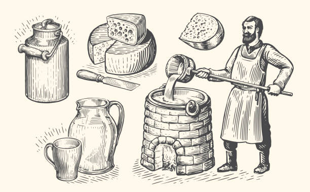
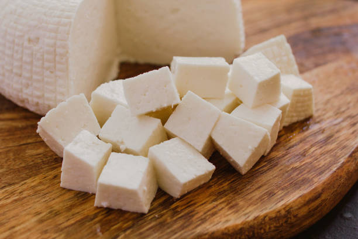
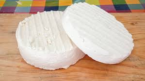
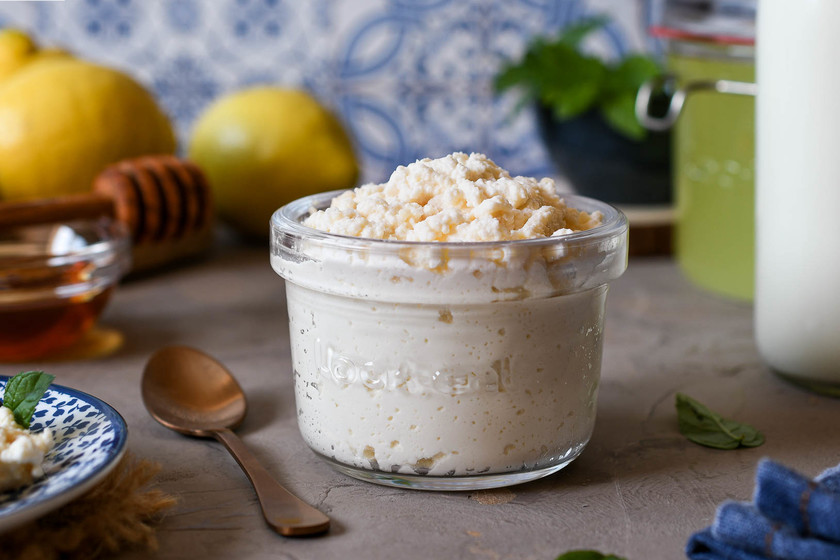

Acerca de
Somos una empresa familiar dedicada a la producción de quesos artesanales con ingredientes 100% naturales.
Nuestros Productos

Queso panela (1kg) - $140

Queso de hebra (1kg) - $150

Queso redondo grande - $30

Requesón (1kg) - $100
Historia y Curiosidades
El queso es uno de los alimentos más antiguos del mundo, con una historia que se remonta a más de 7,000 años.
- Existen más de 2,000 tipos de quesos en el mundo.
- El queso más caro es el "Pule", hecho con leche de burra de los Balcanes.
- Francia es el país con la mayor variedad de quesos.
- El queso más apestoso es el "Vieux Boulogne".